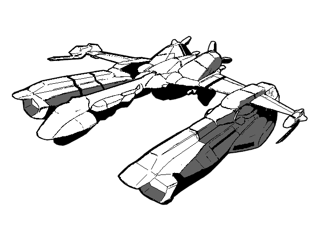

The following material is from
THE THIRD INVID
WAR, a fan supplement by
Dave Deitrich and
Chris
Meadows. Please feel free to use, copy, and distribute
it as you see fit. All we ask is that you give proper credit to us and do not
claim that it is your own work. Comments and suggestions are welcome.
REF EXETER-CLASS ESCORTS
Based on a starship design by JOHN WALTRIP and JASON WALTRIP
Published in Eternity Comics' Robotech II: The Sentinels comic
books.
Original Artwork by PRESLEY
H. CANNADY II (cannady@magiccarpet.com)
RPG Stats by DAVE DEITRICH
(deitrich@mcs.net)

BACKGROUND
The Exeter-class Escort has perhaps the most intriguing
background of any capital ship class in the REF fleet. Originally named the
Ark Angel-class, the escorts were built shortly after the first REF
engagement with the Invid over Tirol in 2022. During this battle enormous
numbers of Invid mecha overwhelmed REF Veritech squadrons and did serious
damage to the SDF-3 Pioneer and other REF capital ships before being
forced to withdraw. This near-defeat pointed out a fundamental flaw in the
REF's war strategy. Based on their experiences with the Zentraedi the REF had
expected to encounter a large number of capital ships around Tirol and had
built up the expeditionary force fleet accordingly. However, the forces of
the Invid Regent were based on hit-and-run tactics using large numbers of
smaller mecha such as Scouts and Troopers. Unprepared for assaults by large
numbers of mecha, the REF fleet took heavy losses in the early battles of the
Sentinels War due to inadequate anti-mecha defenses.
The Ark Angel-class escorts were designed to counteract this weakness. The
ship is armed with 40 retractable laser turrets and 8 retractable missile
turrets, double the anti-mecha defenses of larger capital ships such as the Warrior-class destroyers and the Tokugawa-class
cruisers. In addition, the escorts can carry four wings of Veritechs in their
enormous launching bays located on each wing. Designed by the same engineers
who built the Horizont-class troop shuttles, the escorts have the same
graceful "flying swan" body style that makes them look too delicate for
warship duties. However, the ships are surprisingly durable and, more
importantly, agile enough to surprise many mecha pilots. The vessels are even
fold-capable, allowing them to keep up with large convoys and protect them
from Invid attacks. The only glaring weakness of the class is that it lacks
heavy weaponry for ship-to-ship combat. Aside from a single heavy laser, the
escort must rely on its fighter wings to protect itself from enemy warships.
The RSS Ark Angel, the prototype ship for the design, was the first
starship produced by the REF at the recently captured Tirolian shipyards.
However, shortly after the warship's initial test flights were completed the
Ark Angel was hijacked by Colonel Jonathan Wolff and a group of officers and
crew loyal to Rick Hunter and the Sentinels, who were trapped on the dying
planet Praxis. After Wolff rescued the Sentinels the freedom fighters
commandeered the ship and used it to defeat the Invid on Gaurda and Haydon IV.
Following the Sentinels victory at Haydon the grateful Haydonites gave the
heroes the last surviving Haydonite cruiser, which Admiral Hunter ironically
decided to also name Ark Angel. Both Ark Angels were used by
the Sentinels throughout the rest of the Sentinels War. Unfortunately the
escort Ark Angel was destroyed above Optera during the final battle of
the war.
Eventually the charges against Jonathan Wolff and his associates for stealing
the original Ark Angel were dropped. However, not wishing to glorify
the hijacking of one of their ships the REF decided to change the name of the
class to Exeter, which was the second escort produced at Tirol. The
name Ark Angel was officially assigned to the Sentinels' haydonite
cruiser when it became part of the REF fleet in 2033.
Exeter-class escorts served as an important part of the REF fleet throughout
all three Invid wars. The class was eventually retired in 2052, although
escorts continued to serve in the RGF fleet until the late 2070s. Several
ships have been purchased by commercial interests and are now used as cargo
vessels, a job in which they perform extremely well since they have both space
fold and atmospheric re-entry capabilities. Exeters were produced at the
Fantoma Orbiting Shipyards, Karbarran Space Works and Peryton IV Shipyards,
sometimes reaching production rates as high as 25 per year.
RPG STATS
Government: Robotech Expeditionary Force, later Sentinels Alliance
Ship Type: Super Dimensional (Space Fold) Escort
Class: Exeter SFE-2000 (originally Ark Angel Class)
Manufacturer: Tirol (Fantoma Orbiting Shipyard), Karbarra (Karbarran
Space Works), Peryton (Peryton IV Shipyards).
- Crew: 390 total
- Officers: 20
- Main Crew: 191
- Flight Crew: 100
- Mecha Pilots: 48 + 6 reserve
- Troops: 25
- Notable Ships of Class:
-
| SDF-07 Ark Angel |
launched 2024, hijacked by Jonathan Wolff same year, served with Sentinels 2024-2032, destroyed over Optera in 2032 |
| SFE-2002 Exeter |
launched 2025, assigned to REF Venus Attack Group in 2033, destroyed by Invid in 2035 |
MDC BY LOCATION:
(1) Main Bridge 500
(2) Forward Command Section 1,200
(2) Neck Section 600
(3) Main Body/Engineering Section 3,200
(4) Flight Deck Nacelles (2) 3,500 each
Wings (2) 900 each
(5) Main Engines (3) 1,500 each
(5) Auxiliary Engines (2) 800 each
Guidance Thrusters (30) 200 each
Main Laser (1, bottom) 300
Retractable Laser Turrets (40) 100 each
Retractable Missile Launchers (8) 100 each
(6) Pin Point Barriers (4) 5,000 each
Small Airlocks/Access Hatches (12) 250 each
Main Airlocks (2) 500 each
Outer Hull (per 40ft area) 200
Interior walls (per 20ft area) 20
Hangar Doors (4) 500 each
NOTES:
- Destroying the forward bridge will instantly kill anyone on the command
deck. However, there is an auxiliary bridge in the engineering section
that the surviving crew can take command from. If the main bridge is
lost the ship will be operating at -2 initiative due to having to rely
on backup systems.
- Depleting the MDC of the forward command section or neck section will
seriously impair (practically destroy) the ship. (1D4x10)% of the crew
will be killed, the main bridge will be lost (see above), the main
laser will be destroyed, and 16 concealed lasers and 2 concealed
missile launchers will be destroyed. The surviving crew can effectively
command the ship from the engineering section, but will be at -5
initiative and -2 to dodge due to severe systems damage.
- Depleting the MDC of the main body/engineering section will eliminate the
escort. All internal systems will shut down, including life support and
internal gravity. In addition, there is a 40% chance that the power
systems will overload and the ship will explode, doing 1D6x1,000 M.D. to
everything in a 1,500 ft (458 m) radius. Regardless of whether it
explodes or not, the ship itself will be an unsalvageable floating
wreck.
- Destroying the flight deck nacelles will greatly impair the escort's
ability to deploy and recover mecha. Under normal circumstances the
destroyer can launch or recover 8 mecha per nacelle, per turn. For every
400 points of damage a flight deck takes reduce this number by 1. If the
flight deck reaches 0 MDC then it is destroyed; no mecha can be
launched or recovered, (1D6x10)% of the flight crew will be killed, and
any mecha that have already been launched will need to find another place
to land.
- Depleting the MDC of the main engines will force the ship to rely on its
secondary engines. Depleting the MDC of the main engines AND secondary
engines will leave the ship adrift in space. If in an atmosphere, the
ship will crash (destruction of the main engines will render the
antigravity system useless due to loss of power). The wings do not
provide sufficient lift for the escort to attempt a controlled landing.
- The Pinpoint Barriers regenerate at a rate of 1,250 MD per second (2,500
MD per melee round). If destroyed, a barrier will completely regenerate
within four seconds (2 melee rounds). See the Pinpoint
Barrier System entry for details.
SPEEDS:
- Speed (sublight): 0.24 speed of light (38,400 miles/61,800 km per
second)
Speed (Auxiliary Drives): Mach 15
Space Fold: Range Unlimited (1 light year every 6 minutes).
Planet bound:
- Has vertical take off and landing (VTOL) capability. Can reach speeds of
up to Mach 5 in an upper planetary atmosphere, but not designed for extended
flight or maneuvering. Can also travel underwater at up to 100 mph (160 kmph)
if absolutely necessary.
- Maximum Range: Unlimited (powered by a protoculture reactor with an
estimated life span of 20 years)
STATISTICAL DATA:
Length: 700 ft (233 m)
Width: 518 ft (158 m)
Height: 210 ft (64 m)
Weight: 19,200 tons (standard)
Fold System:
Robotech Research Group (RRG) Mk. 2G fold system cluster
Sublight Drive:
REF Naval Engineering Class VII macro nozzle cluster
Gravity Control System:
REF Naval Engineering Class IV internal gravity control system
Auxiliary Engine:
REF Naval Engineering Class VIII mass-conservation thrust system
Radar System:
RRG Type X Hyperspace Sensor Cluster
WEAPON SYSTEMS:
- MAIN LASER CANNON (1): The only anti-starship weapon the
Exeter-class escort carries is a single heavy laser cannon mounted below
the command section of the ship. The laser is fixed forward and can only
fire at targets directly in front of the ship.
- PRIMARY PURPOSE: Anti-Warship
- SECONDARY PURPOSE: Heavy Assault
- RANGE: 500 miles (805 km) in an atmosphere,
1000 miles (1609 km) in space
- DAMAGE: 4D6x100 M.D. per blast
- RATE OF FIRE: The laser can fire once every other round
- PAYLOAD: Unlimited
- RETRACTABLE LASER TURRETS (40): The escort's main anti-mecha
weaponry consists of 40 retractable laser turrets mounted at various
strategic places along the hull. These short-range are devastating
against mecha and can do moderate damage against any enemy spacecraft
that get too close. When not in use gun turrets are concealed within the
hull underneath a sliding hatch. At most 20 lasers can be brought to
bear on a single target.
- PRIMARY PURPOSE: Anti-Mecha
- SECONDARY PURPOSE: Defense
- RANGE: 30 miles (48.3 km) in an atmosphere,
60 miles (96.6 km) in space
- DAMAGE: 1D6x20 M.D. each. Several lasers can be directed to
fire in volleys of 3 or more. A volley of 3 beams does 3D6x20 M.D., a
volley of 6 beams does 6D6x20 M.D., and so on. A full volley of 20
beams aimed at a single target does 1D6x400 M.D. (!) if it hits.
- RATE OF FIRE: Each laser can fire once per melee, and can be
combined in any volley combination of 3 or more lasers, up to 10
lasers. Volleys can be directed at different targets.
- PAYLOAD: Unlimited.
- NOTE: The lasers can be set on automatic during combat, during
which time they have a +3 to strike due to their advanced tracking
systems. The lasers tracking systems will target incoming missiles
first and attacking mecha/aircraft second.
- RETRACTABLE MEDIUM MISSILE LAUNCHERS (8): In addition to the
retractable lasers, the Exeter escorts carry eight medium range missile
launchers which are also intended for anti-mecha defense. Each launcher
contains 10 missile tubes allowing volleys of up to 10 missiles to be
fired at a single target per launcher. Once depleted, the missile
launchers are reloaded by an automated loading system that takes 15
seconds (one melee round) to reload all 10 missiles. Armor-piercing
smart missiles are usually used to avoid chances of friendly fighters
being shot down by the missiles.
- PRIMARY PURPOSE: Anti-Mecha
- SECONDARY PURPOSE: Anti-Warship
- MISSILE TYPES: Any type of REF Medium Range Missile can be
used. Smart missiles are commonly used to avoid hitting friendly
aircraft.
- RANGE: Varies, typically 60 miles (80.4 km).
- SPEED: Varies, typically 1600mph (2571kmph) in an atmosphere.
- DAMAGE: Varies, typically 2D4x10 M.D.
- BLAST RADIUS: Varies, typically 15 feet.
- RATE OF FIRE: Volleys of 2, 4, 6, 8, or 10 missiles per
launcher.
- PAYLOAD: Each launcher holds 10 missiles. Once the missiles
are expended the launcher is reloaded within 1 round via an automated
system. The reload system holds 60 missiles per launcher.
- DS-1 PINPOINT BARRIER DEFENSE SYSTEM: Originally
developed by Dr. Emil Lang onboard the SDF-1 during the First Robotech
War, the Pinpoint Barrier System is a standard defense system on board
most REF starships, including the Exeter escorts. The system
generates four small disc-shaped force fields that can be positioned
anywhere along the ship to deflect missiles, energy beams or projectiles.
Each pinpoint barrier is about 200 ft (61 m) in length and can absorb up
to 5,000 MD in damage, which then regenerates within five seconds (3 melee
attacks). The barriers can also be layered on top of each other to
generate a field which provides 20,000 MDC and can even deflect heavy
particle beams (usually).
The four barriers are controlled by operators in the command tower of the
carrier. These operators are instructed to defend (1) the command
section, (2) main engines, (3) flight decks, and (4) engineering section,
in that order. The operators primarily concentrate on defending the ship
against larger spacecraft and leave defense against mecha attacking the
destroyer to the Veritechs and retractable weapon systems.
- PRIMARY PURPOSE: Defense (the pinpoint barrier system cannot be
used as a weapon)
- RANGE: Up to 100 feet (30.5 m) from the surface of the vessel.
- DAMAGE CAPACITY: Can sustain up to 5,000 MD per round.
Regenerates at a rate of 2,500 MD per melee round.
- RADIUS: 200 ft (61 m)
- DEFENSIVE MOVEMENT: Can move from one end of the destroyer to
the other in less than a single round. Trained operators can attempt
to block attacks up to 8 times per melee (counts as a parry) and are
at +7 to block. Untrained characters can parry up to their number of
hand-to-hand attacks with their normal parry bonuses only.
- PAYLOAD: Nearly inexhaustible. Will work as long as system is
functional (see below) and engines are intact. If main engines are
destroyed, the barrier will loose power and not function.
- NOTE: If all four barriers are grouped in a single spot they
can deflect a heavy particle beam attack, such as the one generated
by Zentraedi or Robotech Master warships. However, the beam will
completely destroy all four barriers and put incredible strain on the
pinpoint barrier system to the point where it may short out. After
deflecting an energy beam, roll percentile dice on the table below to
determine additional effects/damage.
- 01-15: Lucked out, system will be operational in 1D6 hours.
- 16-30: Minor damage, system will require 4D6 hours to
repair.
- 31-45: Major damage, system will require 2D6x10 hours to
repair (yes, DAYS of work).
- 46-60: Completely destroyed! System can be rebuilt, but
will require new parts and 2D6 DAYS of work to
replace.
- 61-75: Major damage, system will require 2D6x10 hours to
repair.
- 76-90: Minor damage, system will require 4D6 hours to
repair.
- 91-95: Lucked out, system will be operational in 1D6 hours.
- 96-00: It's a miracle! Trivial damage only, system will
be operational again in only 4D6 melee rounds!
SYSTEMS OF NOTE:
- ANTIGRAVITY PROPULSION SYSTEM: The Exeter escorts are
equipped with an anti-gravity propulsion system used for planetary landings
and liftoffs. The system is good for vertical ascent/descent only and can
lift the ship at speeds of up to 1,320 feet (400 m) per minute. The system
will function so long as the main engines can supply energy to it.
- HYPERSPACE COMMUNICATIONS: The escort is equipped with a
hyperspace communications relay which allows faster-than-light communication
between the ships and other vessels or planetary bases. Hyperspace
communications are still not instantaneous, however. Audio/video
communication travels through hyperspace at a rate of about 5 seconds per
light year, so messages communicated over vast distances can still take days,
weeks, or months to arrive.
- LIFE SUPPORT SYSTEMS: The Exeter destroyers have sufficient life
support to provide breathable air and comfortable temperatures for 500
people for up to 15 years (air is recycled). In an emergency the life support
system can support up to 800 people at one time, though living conditions
onboard will get extremely cramped at that point. The carrier also holds
sufficient food and water to support 400 people for up to 6 months.
- LONG-RANGE LASER/SATELLITE RELAY COMMUNICATIONS: The communications
array of the escort can communicate with up to 500 craft simultaneously at
ranges of up to 600 miles (960 km). This range can be boosted indefinitely by
using satellites or other spacecraft to relay communications.
- LONG-RANGE RADAR: The radar array of the Exeter can track and
identify up to 500 craft simultaneously. The radar system has a
600 mile/960 km range.
- SPACE FOLD SYSTEM: For FTL propulsion the escort is
equipped with a fold drive, capable of propelling the ship through hyperspace
at speeds up to 3.28x10^10 mps (5.25x10^10 kmps), or 1 light year per 6
minutes. When executing a space fold the Exeter will transport any ships
within a 1 mile (1.6 km) radius with it, allowing it to transport up to about
a dozen smaller ships with it, if necessary. The range of the fold drive is
theoretically unlimited except by the life expectancy of the spacecraft.
- SUBLIGHT ENGINES: As a backup to the Fold System, the escort
is equipped with sublight engines that can propel the ship at speeds up to
0.24 speed of light (38,400 miles/61,800 km per second) in space. Note that
these engines are mainly intended for rapid movement inside a planetary system
and are not suited for long voyages between star systems. In a planetary
atmosphere the carrier is limited to speeds of Mach 2 at low altitudes or Mach
5 at high altitudes due to hull stress.
- SUBSPACE MASS SENSORS: The Exeter is equipped with subspace sensors
which are based on the same principles as the hyperspace communications array.
These sensors can essentially instantly detect mass readings and movement of
objects up to 1 AU (93 million miles) distant from the ship, and the readings
are used both for early warning and for navigation when travelling at sublight
speeds. Readings taken with the subspace sensors are not very detailed (-25%
penalty when trying to identify a detected object) and cannot detect objects
of less than 60,000 kg (this includes most mecha).
MECHA COMPLEMENT:
Each landing bay nacelle can hold and support up to 24 veritechs/destroids of
any type (48 total), as long as the mecha are smaller than 50 ft (15.2 m) and
weigh less than 40 tons each. Destroids are rare on Exeter escorts since they
are usually restricted to space duties, however the final mecha breakdown
depends on the mission. A typical mecha complement for an Exeter will
include:
- 24 Alpha Veritechs (VAF-6 or VAF-8)
- 12 Beta Veritechs (VBF-1 or VBF-2)
- 4 Logan Veritechs (Southern Cross pg. 57)
- 7 TBP-Z1 Tactical Battle Pods (Sentinels pg. 70)
- 1 OBP-Z2 Officer's Battle Pod (Sentinels pg. 72)
An Exeter will also have 25 Cyclones of
various types (for use by the troops), 8 TCH-4 Tractor-Haulers, 14 ML-3
Forklifts, and 4 REF Personnel Shuttles onboard.